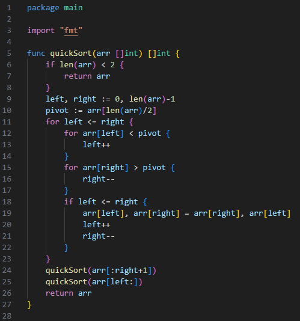

Bem vindo
Módulo I
Módulo II
Módulo III
Algoritmos de ordenação...1. Bubble Sort:• Um dos algoritmos de ordenação mais simples, mas menos eficiente para listas grandes. Ele compara pares adjacentes de elementos e os troca, empurrando-os para o final da lista em cada passagem. Em Go, é possível implementar o Bubble Sort manualmente, mas na prática ele é raramente usado devido ao seu custo em tempo . - Otimizações do Bubble Sort: Uma variação comumente usada é o Bubble Sort Otimizado, que inclui uma verificação para identificar se a lista já está ordenada antes de concluir a iteração completa. Assim, se nenhuma troca foi feita em uma passagem, o algoritmo pode parar. Isso reduz o número de operações em listas quase ordenadas. - Complexidade Melhorada: Em listas quase ordenadas, essa versão otimizada pode atingir uma complexidade próxima a O(n) em alguns casos, mas ainda mantém O(n²) no pior caso. - Desvantagens: Apesar das otimizações, Bubble Sort é um dos algoritmos menos eficientes para grandes listas. Ele é, porém, útil para fins educacionais e compreensão inicial de algoritmos de ordenação. Terminal: 2. Selection Sort:• Também simples, esse algoritmo busca o menor elemento do array e o coloca na primeira posição, repetindo o processo para cada posição subsequente. Sua complexidade também é , o que torna o Selection Sort menos eficiente para listas grandes. - Variações e Melhorias: No Selection Sort, uma variação conhecida é o Selection Sort com Dois Pontos, onde o algoritmo localiza tanto o menor quanto o maior elemento em uma única passagem e os coloca nas posições corretas ao mesmo tempo. Isso reduz o número de iterações pela metade, mas não melhora a complexidade O(n²). - Estabilidade: O Selection Sort não é estável, ou seja, ele não preserva a ordem de elementos iguais. Em contextos que exigem estabilidade, como em algoritmos que ordenam registros baseados em um campo específico, essa pode ser uma desvantagem. Terminal: 3. Insertion Sort:• Insere cada elemento da lista em uma posição ordenada, um por um. É eficiente para listas pequenas ou quase ordenadas, mas também tem complexidade no caso médio e no pior caso.Desempenho em Dados Quase Ordenados: Insertion Sort é eficiente para listas pequenas e quase ordenadas, com uma complexidade próxima a O(n) para esses casos. Isso o torna ideal para ser combinado em algoritmos híbridos, como Tim Sort, que é usado em linguagens modernas como Python. Tim Sort usa Insertion Sort para ordenar pequenos segmentos da lista (sublistas) devido à sua eficiência em listas pequenas. - Estabilidade e Aplicações Práticas: Insertion Sort é estável, tornando-o útil para ordenar dados onde a ordem original de elementos iguais deve ser preservada. Isso é especialmente valioso em ordenações com múltiplos critérios (ex.: primeiro por nome, depois por idade). Terminal: 4. Merge Sort:• Esse é um algoritmo de ordenação mais sofisticado com complexidade , pois utiliza uma abordagem "dividir para conquistar" (divide and conquer). Ele divide a lista em sublistas, ordena cada uma e as combina para formar a lista final ordenada. Em Go, ele pode ser implementado de forma recursiva, aproveitando bem a memória para listas grandes. - Dividir para Conquistar: Merge Sort usa uma abordagem divide-and-conquer, que permite dividir a lista em duas partes, ordená-las e, em seguida, mesclar as duas metades ordenadas. Cada divisão tem complexidade O(log n) e a mesclagem O(n), resultando em uma complexidade total de O(n log n). - Otimização de Merge Sort: Merge Sort Interno e Externo é uma variação onde, em listas muito grandes, o algoritmo divide a lista entre a memória e o disco. Merge Sort externo é particularmente útil para grandes volumes de dados, como em sistemas de banco de dados, onde os dados excedem a memória disponível. - Desvantagens de Uso de Memória: Embora eficiente, o Merge Sort requer memória extra para armazenar as sublistas durante a mesclagem. Em sistemas com recursos limitados, como dispositivos embarcados, essa exigência de espaço pode ser um problema. Terminal: 5. Quick Sort:• Outro algoritmo eficiente que também tem complexidade no caso médio. Ele seleciona um pivô e reorganiza a lista para que todos os elementos menores que o pivô fiquem à esquerda, e os maiores, à direita. Depois, ele aplica o mesmo processo recursivamente nas sublistas. Em Go, o Quick Sort é altamente eficiente, mas pode ser implementado de forma híbrida para evitar o pior caso. - Escolha do Pivô: A eficiência do Quick Sort depende da escolha do pivô. Usar o último elemento como pivô em listas já ordenadas leva ao pior caso O(n²). Algumas variações comuns incluem usar um pivô aleatório ou o elemento central para garantir uma melhor divisão dos dados. - Quick Sort Híbrido: Para evitar o pior caso, Quick Sort híbrido usa outros algoritmos, como Insertion Sort, quando as sublistas se tornam suficientemente pequenas, melhorando o desempenho geral. Esse híbrido é implementado na maioria das bibliotecas de linguagens modernas. - Divisão Direta: Ao contrário do Merge Sort, o Quick Sort é feito "in-place", ou seja, não requer espaço adicional para as sublistas. Isso o torna preferível em contextos onde o espaço de memória é uma preocupação.  Terminal: 6. Sort Package:• Go oferece o pacote sort, que tem funções embutidas para ordenar slices de tipos numéricos, strings e até mesmo tipos personalizados (usando interfaces). Ele usa uma combinação de algoritmos para obter eficiência máxima em vários cenários. O sort.Ints, por exemplo, ordena slices de inteiros com ótima performance sem precisar de implementações manuais. - Função sort.Search: A função sort.Search do pacote sort em Go implementa uma busca binária eficiente, retornando a posição onde o elemento pode ser encontrado ou inserido, caso não esteja presente. Isso é útil para inserir novos elementos em uma lista ordenada mantendo a ordenação. - Interface sort.Interface: Go permite que usuários personalizem algoritmos de ordenação para tipos complexos. Usando a interface sort.Interface, que define métodos como Len, Less, e Swap, é possível ordenar slices de estruturas personalizadas, o que oferece flexibilidade para ordenação baseada em vários critérios. Terminal: Algoritmos de busca...1. Busca Linear (Linear Search):• Simples, percorre cada elemento da lista até encontrar o alvo. Funciona bem em listas pequenas ou desordenadas, mas é ineficiente para listas grandes, com complexidade . Descrição: - A busca linear percorre todos os elementos de uma lista um por um até encontrar o elemento desejado ou chegar ao final da lista. - Funciona tanto para listas ordenadas quanto para desordenadas. Complexidade: - A complexidade no pior caso e no caso médio é O(n), onde n é o número de elementos. Isso ocorre porque o algoritmo pode precisar verificar cada elemento da lista. - No melhor caso, a complexidade é O(1), caso o elemento alvo seja o primeiro da lista. Vantagens: - Simples de implementar e funciona com qualquer tipo de dados. - Útil em listas pequenas ou desordenadas. Desvantagens: - Ineficiente para listas grandes, pois exige a verificação de cada elemento. Exemplo de Aplicação: - A busca linear é comum em listas pequenas ou em dados onde não é viável manter uma estrutura ordenada, como listas de convidados de um evento onde a ordem de chegada é irrelevante. Exemplo em Go: Terminal: 2. Busca Binária (Binary Search):• Este algoritmo é muito eficiente em listas ordenadas. Ele divide a lista ao meio e decide em qual metade o elemento pode estar, descartando a outra metade. Esse processo é repetido até que o elemento seja encontrado, com complexidade . Em Go, pode-se implementar a busca binária manualmente ou usar o pacote sort para realizar uma busca binária em uma lista ordenada. Descrição: - A busca binária é um algoritmo de busca eficiente, mas exige que a lista esteja previamente ordenada. - O algoritmo divide a lista ao meio e verifica se o elemento alvo é maior ou menor que o elemento central. Ele descarta metade da lista a cada etapa e repete o processo na metade restante até encontrar o elemento ou esgotar as possibilidades. Complexidade: - A complexidade no caso médio e pior caso é O(log n), onde n é o número de elementos. Isso se deve ao fato de que a cada iteração a lista é dividida ao meio. - No melhor caso, a complexidade é O(1), caso o elemento esteja no meio da lista na primeira verificação. Vantagens: - Extremamente eficiente para listas grandes e ordenadas, pois reduz o número de comparações. - Muito mais rápido que a busca linear em listas grandes e ordenadas. Desvantagens: - Só funciona em listas ordenadas. Se a lista não estiver ordenada, será necessário ordená-la previamente, o que pode impactar o desempenho. Exemplo de Aplicação: - A busca binária é comumente usada em sistemas de arquivos, onde os dados são indexados para busca rápida. Outra aplicação é em listas de preços, onde a busca binária encontra um preço específico de maneira rápida em uma lista já ordenada. Exemplo em Go: Terminal: 3. Pacote Sort (Binary Search):• O pacote sort também inclui funções como sort.Search que implementam busca binária em slices ordenados de inteiros ou strings. Escolha do Algoritmo - Pequenas listas: Algoritmos como Insertion Sort e até o Bubble Sort podem ser úteis. - Listas grandes e desordenadas: Quick Sort e Merge Sort são as melhores opções. - Busca em lista ordenada: A Busca Binária é a mais eficiente para listas ordenadas. Exemplo de Uso de Ordenação em Golang - Usando o pacote sort, você pode ordenar um slice de inteiros com muita facilidade: Terminal: - Esse código usa o sort.Ints para ordenar o slice numbers. Exemplo de Busca Binária em Golang - Usando a função sort.Search para encontrar um número específico em uma lista ordenada: Terminal: - Esse código utiliza sort.Search, que realiza uma busca binária no slice numbers para encontrar o número target. Instalação e configuração, história da linguagem... |
|---|